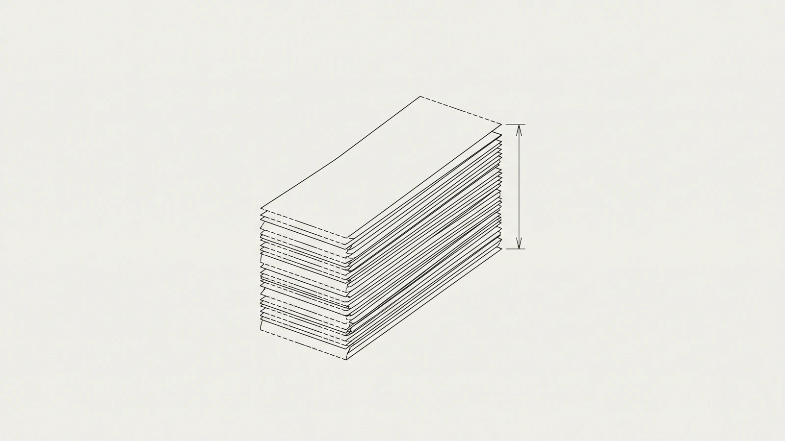

Nadie mide lo que cuesta liquidar un viaje a mano. Nosotros lo medimos.
El costo de la liquidación de viajes no vive en ninguna cuenta contable: está repartido entre tráfico, liquidaciones, facturación y contabilidad. Nuestro censo lo pone en unos $105 por viaje, en una banda de $94 a $115.

Busca «liquidación de viajes» en español y lo que sale son páginas de producto: módulos, pantallas, listas de funciones. Ninguna dice lo que ya te está costando hacerlo como lo haces hoy. Y no es por descuido: el costo de liquidar no está escondido en un renglón — está repartido entre cinco nóminas distintas, y para verlo hay que sumar pedazos de cinco puestos.
Qué es liquidar un viaje, sin rodeos
Liquidar un viaje es cerrar su expediente de dinero y de papel: juntar la evidencia de todo lo que se gastó en carretera, compararla contra el anticipo que se le entregó al operador y determinar quién le debe a quién. En una flota mexicana eso implica que queden probadas cinco cosas por cada viaje:
- Qué se gastó y a qué viaje pertenece — unidad, operador, ruta, fecha.
- Con qué se pagó: efectivo del anticipo, tarjeta de la empresa o TAG.
- Con qué comprobante quedó: CFDI vigente, ticket sin valor fiscal, o nada.
- Cuánto se entregó por adelantado y cuánto regresó.
- Qué parte de ese gasto es deducible, qué parte es acreditable y qué parte no es ninguna de las dos.
La quinta es la que convierte a la liquidación en un problema fiscal y no solamente administrativo. Un viaje mal liquidado no se queda quieto: se convierte en una deducción que no se sostiene, en un estímulo que no se acredita y en una diferencia con el operador que se arrastra a la siguiente quincena.
Cinco puestos tocan un viaje antes de que quede cerrado
El proceso de liquidación de viajes casi nunca vive en una sola persona. En las operaciones que censamos, la evidencia pasa por cinco manos antes de convertirse en un asiento contable — y cada cambio de manos es un lugar donde la comprobación de gastos de operadores se atora.
| Quién | Qué hace con el viaje | Dónde se atora |
|---|---|---|
| Operador | Junta y entrega la evidencia: tickets de diésel, casetas, maniobras, fianzas, comidas. | Papel mojado, tickets sin CFDI y gastos que se recuerdan pero no se comprueban. |
| Tráfico | Amarra cada gasto al viaje, a la unidad y a la ruta. | Cruces de caseta y cargas de diésel que nadie sabe a qué viaje pertenecen. |
| Liquidaciones | Captura los gastos, aplica las deducciones en la liquidación del operador y cuadra contra el anticipo. | Recaptura: el mismo viaje regresa dos y tres veces por un dato que faltaba. |
| Contabilidad | Valida los CFDI, cuadra el diésel y decide qué entra a la declaración. | Comprobantes que no desglosan, proveedores en la lista 69-B y cancelaciones posteriores. |
| Autorización y pago | Firma la liquidación y libera el reembolso o el descuento. | La firma espera a que alguien más termine; el operador espera su dinero. |
Ese puesto no es una figura teórica. Al levantar el censo de vacantes del sector aparece nombrado con todas sus letras — auxiliar de liquidaciones, analista de comprobación, capturista de gastos de viaje — en empresas que lo publican y lo pagan. Cuando una flota contrata a alguien para esto, ya declaró que el trabajo existe y cuánto vale.
Censo propio de Likida: 1,318 vacantes verificadas en 829 empresas de transporte.
Cuánto cuesta liquidar un viaje a mano
Unos $105 MXN por viaje liquidado a mano, en una banda de $94 a $115. Eso es lo que arroja nuestro censo cuando se suma el tiempo pagado de los cinco puestos que tocan el ciclo: juntar la evidencia, capturarla, cuadrar el diésel, autorizar y pagar. No incluye el tiempo del operador en carretera, ni licencias de software, ni el costo de lo que se deja de acreditar.
Censo propio de Likida, agosto 2026. Es una cifra nuestra, no una estadística pública: nadie publica el costo unitario de este proceso, y por eso lo medimos.
El costo de liquidar no está escondido. Está repartido. Por eso nadie lo ve.
Por qué ese número no aparece en tu estado de resultados
Por tres razones, y las tres son estructurales. La primera es contable: el gasto vive en sueldos, no en una cuenta llamada «liquidación». La segunda es que la recaptura no se registra — cuando un viaje regresa por tercera vez al escritorio de liquidaciones, nadie levanta un contador. La tercera es la más cara: buena parte del costo no es tiempo, es impuesto que se deja en la mesa.
Lo que se pierde cuando la evidencia llega incompleta
- El estímulo del IEPS del diésel, cuando el comprobante de la gasolinera no sostiene los litros de la carga.
- El acreditamiento del peaje, cuando el estado de cuenta del TAG no se amarra a un viaje concreto.
- La corrección barata de la Carta Porte, que solo es barata mientras el viaje sigue abierto.
- La deducción de un gasto cuyo CFDI se canceló después de que ya entró a una liquidación cerrada.
La válvula de escape que casi nadie nombra en este contexto
Para el autotransporte de carga federal existe una salida legal a la comprobación, y conviene ponerla sobre la mesa antes de que alguien la venda como la solución al problema.
Léela dos veces, porque las tres condiciones que trae dentro son las que definen para qué sirve de verdad. Uno: cada peso deducido por esa vía cuesta 16 centavos de ISR definitivo, que no se acredita ni se deduce después. La facilidad no perdona la comprobación: la vende a un precio fijo. Dos: tiene un techo doble — 8% de los ingresos propios y un millón de pesos en el ejercicio —, así que no escala con la flota. Tres: deja fuera el combustible, que es justamente el renglón más grande y más peleado de cualquier liquidación.
Dicho de otro modo: el gasto ciego es un buen colchón para lo que de plano no tuvo comprobante, y una pésima estrategia de operación. No hace que la evidencia aparezca, no recupera el IEPS del diésel ni el IVA, y no arregla la diferencia con el operador. Compra un pedazo del problema y cobra por hacerlo.
Los gastos del chofer tienen su propia regla
La otra mitad del ciclo son los viáticos, y ahí la ley es específica hasta el peso. Vale la pena tenerla presente cuando se define qué se le pide al operador que traiga de regreso.
En la práctica esto significa tres cosas para quien liquida: la comida no se sostiene sola —necesita colgarse del hospedaje o del transporte del mismo día—, hay un tope diario por operador que conviene traer calculado antes de la auditoría, y los gastos de un movimiento local dentro de los 50 kilómetros no entran por esta puerta. Nada de eso se resuelve al final del mes: se resuelve cuando se recibe la evidencia.
Qué medir antes de intentar bajarlo
Si el costo no se ve, tampoco se puede negociar. Estas cinco métricas se sacan con lo que ya tienes —el archivo de liquidaciones y la nómina— y son suficientes para poner tu propio número al lado del nuestro:
- Días entre el regreso de la unidad y la liquidación pagada.
- Cuántas veces regresa el mismo viaje al escritorio de liquidaciones.
- Porcentaje de gastos que llegan sin CFDI o con un CFDI que no valida.
- Litros de diésel del mes que sí traen desglose utilizable.
- Cruces de caseta del mes que sí quedaron amarrados a un viaje.
Con eso se arma la conversación completa: cuánto tiempo pagado se va en el ciclo y cuánto impuesto se queda sin acreditar por evidencia que llegó tarde o incompleta. Esa segunda parte suele ser la que despierta al contralor.
Nosotros construimos Likida para atacar exactamente ese ciclo, y sobre esa frontera —qué parte la puede hacer un agente y qué parte tiene que quedarse en un motor determinista— escribimos aparte, en qué puede y qué no puede hacer un agente de IA en el back office de una flota. Pero el primer paso no requiere software de nadie: requiere medir.
- Resolución de Facilidades Administrativas para 2026, regla 2.2 — DOF, 17 de febrero de 2026 — texto en el SIDOF.
- Ley del Impuesto sobre la Renta, artículo 28, fracción V — texto vigente, Cámara de Diputados.
- Censo propio de Likida, agosto 2026: costo de liquidación por viaje ($105 MXN, banda $94–$115), cinco puestos que tocan el ciclo y 1,318 vacantes verificadas en 829 empresas de transporte.
¿Cuántas manos tocan un viaje en tu operación antes de que la liquidación quede pagada, y cuántos días se van en el camino?
 Contáctanos
Contáctanos